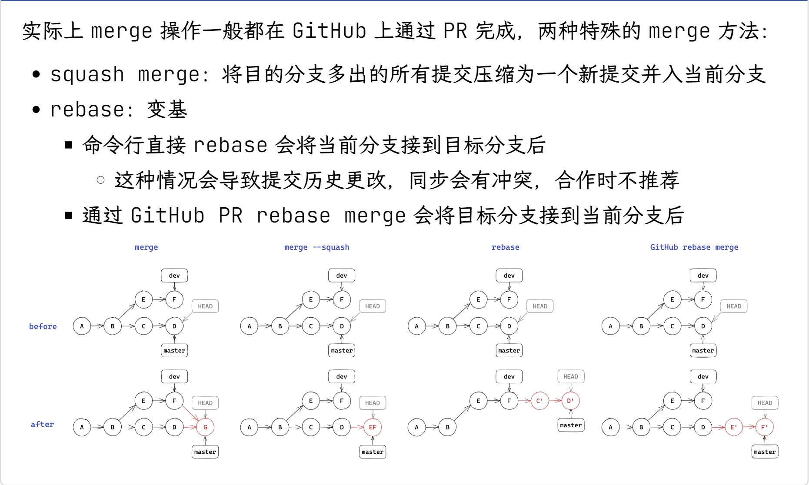

3 Git
[!AI_SUMMARY]-
Git 是一款分布式版本控制系统，可以记录、管理和回溯文件的修改历史。
- Git 模型： 工作区、暂存区、提交历史、仓库。
- 基础操作： 初始化仓库、查看状态、添加修改、删除文件、提交修改、查看历史、切换分支、合并分支。
- 进阶操作： 修改提交历史、使用远程版本库、子模块、Git 结构、项目合作。
在“计算机系统” 系列课程中，我们不可避免地使用到课程仓库，而期间频频发生的错误让我绝望（例如将写了一整天的 lab3 保存不当在 git pull 后全部丢失 QWQ），亦或是在修改后出现因未提交修改而不能够 git pull 等情况……故决定相对系统地学习一番。
文中截图除命令行演示均来自 「实用技能拾遗」。
[!HELP]
如果中途出现了类似于下面这种界面（在
git commit时）不要慌，看看 nano

什么是 Git？
[!INFO]
官网地址：https://git-scm.com/
分布式版本控制系统（DVCS，Distributed Version Control System）
分布式：不需要联网，在自己的机器上就可以使用
版本控制：记录、管理、回溯文件的修改历史
git 模型

上图中，我们平时进行修改的部分正是工作区 working directory ，在我们完成修改后，我们一般使用 git add --all 来将我们的修改移入暂存区 stage ，之后 git commit 提交为 commit history （这代表着一次又一次的版本，也就是 VCS 的含义了），最后 git push 更新仓库。
基础操作
git init
- git init：让当前文件夹变成 git 仓库（创建 .git 文件夹）
- git init folder：创建一个新的文件夹并初始化为 git 仓库

出现 .git 表示成功
git staus
查看工作区&暂存区状态，我们在下面会大量使用到。
- 文件三个类别：未跟踪（Untracked，新建）、已追踪（Tracked，版本库中已经存在）、被忽略（Ignored）
对于 Ignored 部分可以看 这里
git add
首先创建一个新文件用于测试
[!TIP]
如果不理解如何创建可以转看 0_linux-shell

可以看见 1.txt 已经放入了 stage 中
[!TIP]
一个个加自然是十分麻烦的，所以我们可以用
git add .将当前路径下文件全部加入，git add -a 或者是 --all就将所有修改都存入 stage 中啦
git rm
我们都知道 rm 用于删除一个本地文件，而 git rm 则可以删除本地和版本库中的文件，git rm --cached 则用于删除暂存区中的文件

git commit
直接 git commit 我们会发现进入了一个编辑器，比较麻烦，我们可以选择 git commit -m "message" 来进行提交，其中 message 中可以任意填写，但是为了以后看见能知道干了什么还是留有一定信息比较好。
[!TIP]
关于
git commit -m "message"中的 message，为了提高其记录修改的能力，我们最好是遵循一些规范(Angular)；当然，在""放入如此多信息太不雅观了，我们一般选择git commit后在其中添加
更加详细的规范可见 angular
- type：更改类型（fix/feat/docs/refactor/perf/test/ci/...）
- 重大更改可以写 BREAKING CHANGE 或 DEPRECATED（全大写）
- scope：影响范围（可选，比如具体影响的模块等）
- summary：更改的简要描述，英文一般现在时，首字母小写句末无句号
- body：详细描述，可选
- footer：解决 issue 了可以写 Fixes #id 或 Closes #id

git log
输入 git log 可以看到修改历史

[!INFO]
这里我们进入了 vim 编辑模式，不熟悉没关系，我们以看为主，想要退出需要输入
:q即可
- --oneline：每一个提交一行
- --graph：显示分支结构
- --stat：显示文件删改信息
- -p：显示详细的修改内容
可以看到在 commit 后面跟了一串 40 位的哈希值，是每个提交唯一的 sha-1 标识符 ，我们可以用 git show id 来显示详细信息，在不引起歧义情况下前几位即可，例如输入 git show 6b26

git checkout && git branch
准备工作
我们先分两次提交修改 2.txt 文件


可以看见包括最开始的一次共有三次提交，我们只关注 line 1 line 2 即可
那么我们想要放弃第二次的修改，即删除 line 2 的 commit，（使用 git rm --cached 自然是一个好办法，但是想要放弃的修改很多该怎么办？ ）我们使用 git checkout id 来回到某次提交历史时的状态即可

可以看到我们的状态分支变为了 503cf8b （使用 git status 也能看到）
使用 git checkout master 切换回来，当然修改也又会回来

我们回到了 master，可以说丢失了 503cf8b 这一提交历史的修改。
[!INFO]
什么是 HEAD：当前工作区在提交历史中的 指针

当然，我们可 git checkout 503cf8b 回去，但是一般人们不会记这一串感觉毫无意义的哈希值，再者请看：

他向我们发出提示，当前处于 "detached HEAD" state ，也就是说我们当前做的任何修改将不属于任何分支，当我们切换回 master 或者其他分支时，我们将会丢失这一修改（毕竟你明天八成不记得 503 cf 8 b 是什么鬼意思）
但是从最后一行我们可以看到，HEAD is now at 503cf8b line1 于是我们可以通过 git checkout -b branch 来在建立一个新的分支，其中 branch 为新分支的名字

[!NOTE]
分支
- 创建分支
- git branch name：基于当前 HEAD
- git branch name id：基于 id 提交
- 查看分支
- git branch（带 -a 显示远程分支）
- git show-branch 更详细
- 切换分支
- git checkout name
- git checkout -b name：创建并切换
- 内容比较
- git diff branch1 branch2：比较两个分支
- git diff branch：比较工作区和分支
- git diff：比较工作区和暂存区
- 删除分支
- git branch -d branch
在两个分支上修改，在合并前二者互不干扰，有利于多人合作
- 什么是分支名：和 HEAD 一样，也是一个指针（实际上叫引用 ref）
- 可以基于 ref 使用 ~ 或 ^ 定位父提交
- ~ 表示第一个父提交，~2 表示第一个父提交的第一个父提交
- ^ 表示第一个父提交，^2 表示第二个父提交
- 一个提交可能会有多个父提交（merge commit）

git merge
我们在想要保留的分支上键入 git merge branch 后可以将 branch 这一分支的修改内容合并到当前分支
[!EXAMPLE]
键入
git branch -a我们可以看到当前处于 change1 分支上（这一点我们以后不在赘述）
接下来将 change 1 合并至 master 上
可以看到返回了
Already up to date.


合并结果一般分为三种

两种特殊

git tag
git 使用 tag 来控制版本号，例如我们键入 git tag v0.0.1 后回车，啥都没有，但是再次 git tag 可以发现

git show tag 可以展示某版本的修改内容等

详尽的规则可查看 语义化版本 2.0.0
进阶操作
修改提交历史
略，有兴趣可看看原文
远程版本库
[!INFO]
git 这类的 DVCS 通过使用一个“权威”的远程版本库 (remote repository) 来实现协作，但是远程版本库也是一个普通的 git 版本库。
git push
git push 会将本地的提交推送到远程版本库，但是无法直接 push 到远程版本库检出的分支中

当我们将远程版本库更换检出分支既可以了

因此远程一般使用裸版本库（--bare）

可以看到主要是将 .git 文件夹中部分内容放过来了
git pull
git pull 会将远程版本库的提交拉取到本地，包含 git fetch 和 git merge 两个步骤
下面的图很好地演示了远程版本库的工作流

git remote set-url
一次 ssh 连接失败了，可以用下面的命令来更改远程仓库的 URL：
git remote set-url origin https://github.com/username/repo.git
submodule
[!QUESTION]
一个 git 版本库中包含另一个版本库会发生什么？
git 会不允许正常 add/commit，警告这样 clone 时不会包含子版本库

我们通过 git submodule 来解决
根据 hint ，键入 git submodule add ./sub sub ，但是发现报错 fatal: 'sub' already exists in the index，这需要我们把之前暂存区的内容先清空

看到多了一个 .gitmodules 文件，打开看看

再回头看 hint 第六行就明白了 path 和 url 的意思了
[!INFO]
如果仓库托管在 GitHub 上，url 是对应链接，这样才能在克隆仓库时带上 submodule
Git 结构

在 vscode 中我们可以很清楚看到这些文件（夹）
- .git/hooks：钩子脚本，可以在特定的操作时 自动执行
- info logs 存放信息、日志
- .git/objects：存储的所有东西都在这里❗️
- 文件名是对象的 sha1，且头一个字节作为一层目录（加速文件系统）
- 通过 git cat-file -p id 可以查看对象内容（-t 查看类型）
- 三种对象类型：commit、 tree、 blob（Binary Large Object），图解如下

项目合作
一些内容略过
pull request(PR)
对于他人的 repo，你是没有办法直接 push 的，向其中添加代码更改都是通过 pull request 进行的，一般流程如下